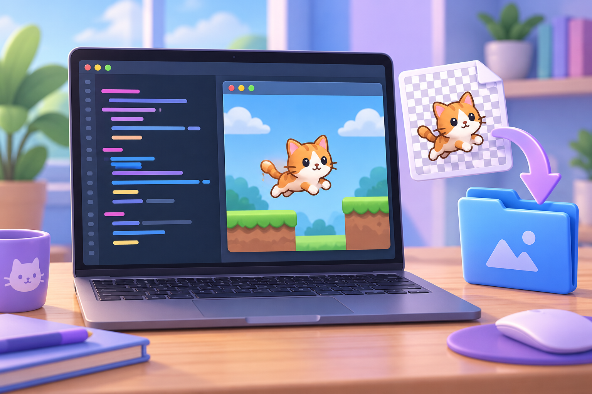

Урок 4 із 10 · З фігури — до персонажа
Додаємо зображення: актори й PNG
Додаємо власний PNG у ресурси проєкту, створюємо Actor і розміщуємо персонажа на сцені.

🎯 Що навчимося робити
Зрозуміти, як підготувати PNG, імпортувати його та показати через Actor.
Працюємо крок за кроком
- Підготуйте невеликий PNG-файл персонажа з прозорим фоном.
- У PGZ Studio відкрийте «Імпорт ресурсів» і додайте зображення до проєкту. У файловій структурі Pygame Zero зображення зберігають у теці images.
- Назвіть файл hero.png. У коді звертайтеся до нього як Actor("hero") — без .png.
- Запустіть проєкт. Якщо зображення не з’явилося, звірте назву файлу та його розташування.
Як перейти від сторінки до запуску коду
- Натисніть «Копіювати код» і скопіюйте приклад.
- Відкрийте ePython, вставте код у редактор і натисніть «Виконати».
- Для графічного вікна PyGame Zero та імпорту PNG відкрийте PGZ Studio. У ній є кнопки «Виконати» й «Імпорт ресурсів».
⌨️ Код для дослідження
Скопіюйте код, відкрийте середовище та змініть хоча б одне значення. Порівняйте результат.
Python · PyGame Zero
import pgzrun
WIDTH = 600
HEIGHT = 400
hero = Actor("hero")
hero.pos = (300, 200)
def draw():
screen.fill((225, 240, 255))
hero.draw()
screen.draw.text("Мій перший Actor", (20, 20), color="navy", fontsize=28)
pgzrun.go()🧩 Перевір себе інтерактивно
Завдання
У коді записано Actor("hero.png"), а файл у ресурсах називається hero.png. Що слід виправити?
Спочатку файл має потрапити до проєкту; лише потім код може знайти його за назвою.
У виклику Actor пишемо ім’я без розширення: Actor("hero"). Переконайтеся, що файл імпортований у теку images або ресурси середовища.
Розташуй кроки за порядком
Перетягніть картки або натискайте ↕, щоб змінити їхнє місце.
Запустити й перевірити сцену
Створити Actor з ім’ям файла без .png
Імпортувати його в ресурси проєкту
Підготувати PNG-файл